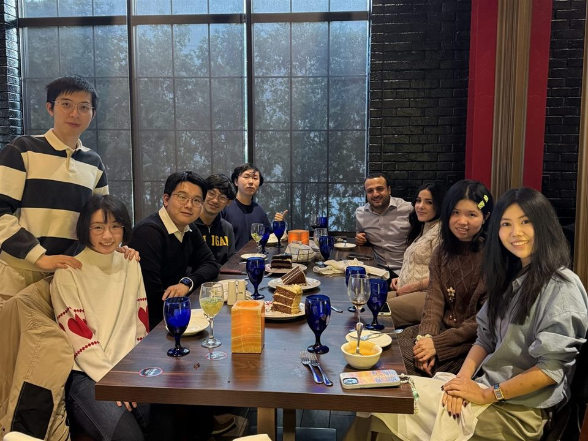
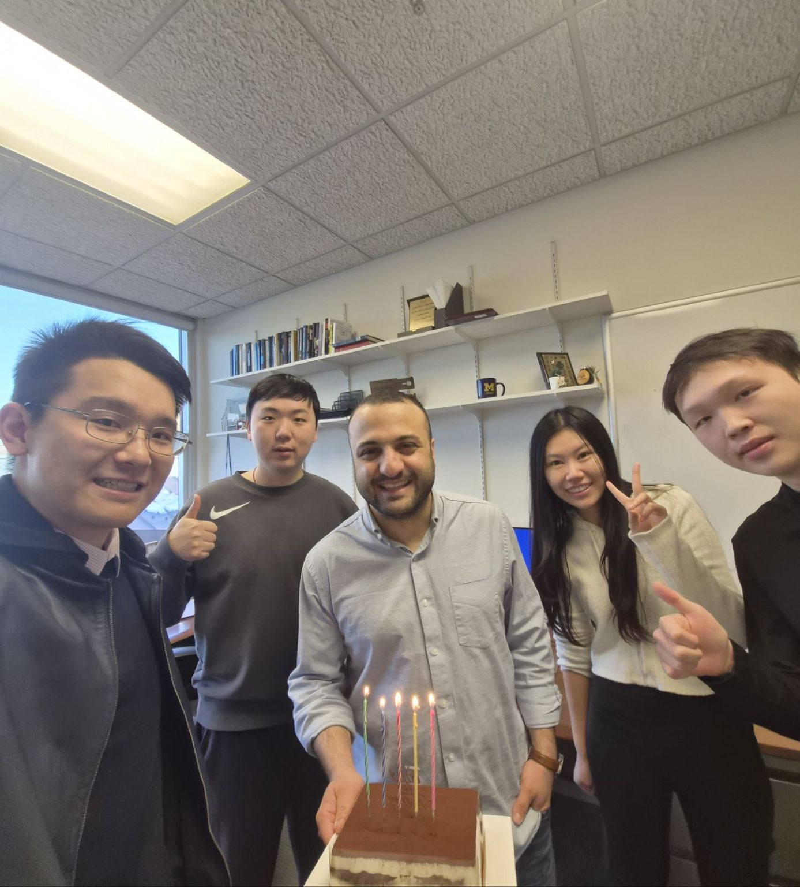

Qiyuan Chen
PhD candidate, IOE
2022 – present
Working with students at all levels is my favorite part of academia. I have been incredibly fortunate to have the opportunity to mentor and collaborate with so many outstanding students.


PhD candidate, IOE
2022 – present
PhD student, IOE
2024 – present
PhD student, IOE
2024 – present
PhD student, IOE
2025 – present
Assistant Professor, jointly in Industrial Engineering & Management Sciences and Mechanical Engineering, Northwestern University
Dissertation: Personalized and Distributed Data Analytics in Heterogeneous Environments
Assistant Professor, Mechanical and Industrial Engineering, Northeastern University
Dissertation: Federated Data Analytics: Theory and Application
Assistant Professor, Systems & Information Engineering, University of Virginia
Dissertation: Collaborative and Distributed Data Analytics for Smart and Connected Systems
Applied Scientist, Amazon
Co-advised with Dr. Jian Kang in the Biostatistics Department at Michigan. Dissertation: Statistical Inference on Large-Scale and Complex Data via Gaussian Processes
Alongside the PhD students above, I have had the utmost pleasure of working with 17 master's students and 14 undergraduates over the past few years.
I am always looking for motivated and detail-oriented PhD and MS students. If you are interested, please apply to our program.